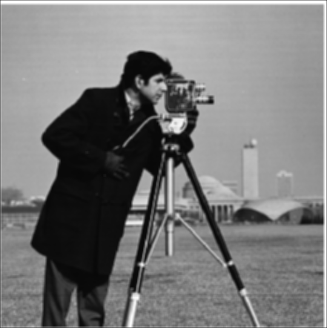
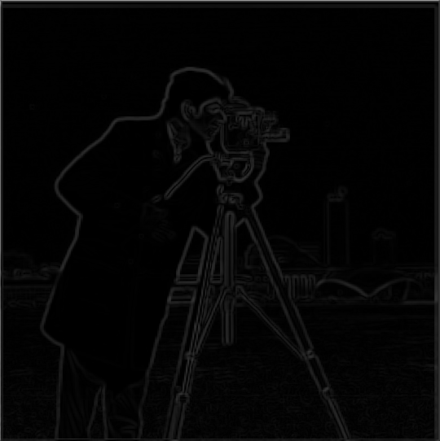
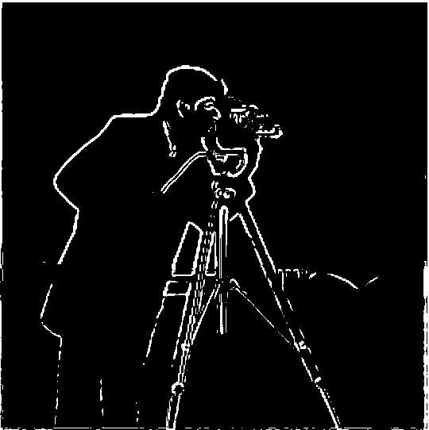

Left: Sharpened Image of Taj Mahal, Right: Blurry Image of Taj Mahal, alpha = 0.7
Below you can see the outputs from applying the finite difference operator to the cameraman image. This was done by convolving the cameramn image with the kernel [1, -1] to calculate the partial derivative with respect to x, and the kernel [[1], [-1]] to calculate the partial derivative with respect to y.
Finite difference gradients in x (left) and y (right)
Now we can use these 2 images to get the gradient magnitude image. To do this we did an elementwise transformation on both of these images. For each pixel I calculated grad_mag[i][j] = sqrt(dx[i][j]^2 + dy[i][j]^2). I then took these values along with a custom defined cutoff of 0.3 in order to binarize this image and successfully detect edges.
Gradient Magniutde Image (left) and Binarized Image (right)
In order to improve the quality of the image derivatives that we are calculating we can use the derivative of gaussian filter. The filter works by first applying a gaussian blur low pass filter to remove the high frequency nosie from the image. This will smooth out the image and make the image gradients much more stable. After passing the image through the gaussian blur filter, we can then repeat the same finite difference operator convolution that we did in the previous part in order to generate a higher quality image gradient.
  From left to right: Blurred Cameraman Image, Magnitude of Blurred Image Gradient, Thresholded Edge Detector
The biggest difference that I saw while doing this was that the gaussian edge detector was much better at gathering the full edge. In the normal edge detector, I had a lot of dots along the man's body and along the tripod. The detector wasn't able to pick up on all of the points along those edges, but in this there is a much better edge detection. Furthermore, the gradient magnitude image did a lot better job removing a lot of the edges along the grass. This is expected behavior because the grass is very high frequency data since there are a lot of small minimal edges that we don't necessarily want to detect.
One of the biggest advantages of using convolution over cross correlation is its commutative property. This allows us to combine both the gaussian blur and the difference operators into 1 singular convolution. If I do this using the finite difference operator and the gaussian filter, I get the following output which is the same as the 2 convolution output.
By subtracting the unit impulse from the gaussian blur kernels we can get a single convolution operator that will sharpen our image by increasing the high frequencies.
Left: Sharpened Image of Taj Mahal, Right: Blurry Image of Taj Mahal, alpha = 0.7


Left: Sharpened Image of Golden Gate Bridge, Right: Image of Golden Gate Bridge, alpha = 3
Left: Original Image of Chicago Skyline, Middle: Blurred Image of Chicago Skyline, Right: Sharpened Image of Blurred Chicago Skyline, alpha = 3
Since our eyes are good at viewing different frequencies at different distances we can overlay the high frequencies of one image on top of the low frequencies of another image in order to get a hybrid image that looks different from up close versus from farther away.
Left: Overlay of high frequencies of derek and low frequencies of the cat , Middle: your sleep paralysis demon, Right: Low Frequencies of Cat
Failure Examples
In this example I overlaid an image of a straight up F1 Car on top of an image of an upside down F1 car. When the low frequency image dominates while looking from far away you can see the car as upside down. However closer up you can see the right side up car. This one doesn't work as well as the other ones because even up close you can still see the upside down car very well. The assymetry of the car makes it easy to see the other frequency from up close.
Favorite Example
From Left to Right: Hybrid Image, High Frequency Image, Low Frequency Image
From Left to Right: Original Lebron Picture, Lebron Log Magnitude FFT, Filtered Lebron Log Magnitude FFT, Original Jordan Picture, Jordan Log Magnitude FFT, Jordan Filtered Log Magnitude FFT, Result Image
Below I have the laplacian and gaussian stacks for the apple and the orange.
Apple Stacks: Left = Laplacian, Right = Gaussian
Orange Stacks Left = Laplacian, Middle = Gaussian, Right = Mask Gaussian
I comibined the 2 images using the mask above in order to get the final oraple below.
Below I have the an irregular mask where I turned kobe into a basketball.
An example that didn't work so well was me trying to merge Alex Albon and George Russel's F1 Cars. The cars merged decently well, but the track was not as smoothly blended.